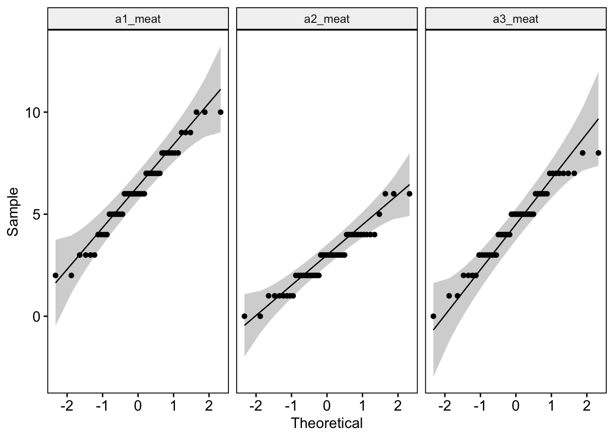
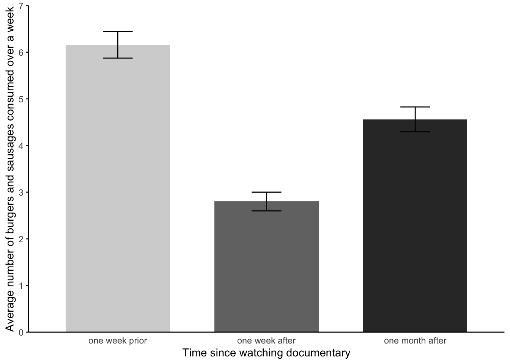

library(tidyverse) # Allows pipes, arrang(), summary(), aov(), etc
library(rstatix) # Allows group_by()
library(ggpubr) # Allows us to examine QQ Plots
library(Rmisc) # Allows shorthand calculations of standard errors and confidence intervals
library(furniture) # Helps create composite variables of averages
library(reshape2) # For data simulation
library(effectsize) # For cohen's D effectsize4. One-Factor Within-Participants ANOVA
Sam Russell, Mark Hurlstone
Lab
Welcome back to Lab 4 of Year 2 Stats!
We are now in our 4th engagement of the new academic year with our good friend, R. As with preceding weeks, we will be working from an activity sheet, which outlines a number of decent tasks to complete in R Studio. The objectives of today’s lab are three fold:
- Running tests of the assumptions of the within-participants ANOVA.
- Running and reporting a within-participants ANOVA and follow up tests.
- Debugging code which is misbehaving.
As always, myself (Sam Russell, weeks 1-4), Mark Hurlstone (weeks 5-9) and an apt team of GTAs will be circulating through the room and answering any queries you may have. In Psyc214, we also encourage peer engagement and joined problem solving - so please do not hesitate to ask for help from another on your table or to work together in small groups. Right, that enough for now, so let’s get started!💪
1 - General Introduction to Lab 4
| “I never dreamed about success, I worked for it” | Estee Lauder.

1.1 Access to R Studio
Here we are, ready to log back into the R Studio Server again.
To log in to the R server, first make sure that you have the VPN switched on, or you will need to be connected to the university network (Eduroam). To set up the VPN, follow ISS instructions here or connecting to Eduroam here.
When you are connected, navigate to https://psy-rstudio.lancaster.ac.uk, where you will be shown a login screen that looks like the below. Click the option that says “Sign in with SAML”.

This will take you through to the University login screen, where you should enter your username (e.g. ivorym) and then your university password. This will then redirect you to the R server where you can start using RStudio!


Note
If you have already logged in through the university login already, perhaps to get to the portal, then you may not see the username/password screen. When you click login, you will be redirected straight to RStudio. This is because the server shares the login information securely across the university.
1.2 Creating a new folder, project and script - loading the data set and dependencies
We have again been whisked away up into the clouds of our R Studio server. Please proceed through the following steps:
Step 1. Please download the week4_meat_consumption.csv file from here
Now that you have the data saved on your machine, it would be good practice to make a dedicated space on our own individual R Studio servers in which to house today’s data, project and script.
To do this, we first need to create a new folder. On the server, please navigate to the bottom right panel (see figure below). Click on ‘Home’ to ensure you are not working from last week’s folder. Here, under the ‘files’ you will see the option to add ‘New Folder’. Click on this and name the new folder psyc214_lab_4 Note. Please ensure this is spelled correctly.

R Studio Server - Creating a folder on your server
- Now that you have a folder in waiting, it’s time to add week 3’s data file. To *upload today’s data** - the week4_meat_consumption.csv file - please open your new psyc214_lab_4 folder. When in the new folder, select the ‘Upload’ tab (see figure below). This will present a box that will ask where the data is that you want to upload. Click on “Browse…”, find where you have the week4_meat_consumption.csv data file on your computer and click ‘OK’

R Studio Server - Uploading data to your new folder
Perfect! The data is now sat patiently in the right place.
We’ll want to be able to create a project session on our server: to do so please: click ‘File’ on the top ribbon -> New project. Next, select existing directory and name the working directory ~/psyc214_lab_4 -> hit ‘create project’. A new workspace will now open up.
The next thing to do is to create a script. While it is possible to work directly from the console (bottom left area of R Studio), scripts offer greater flexibility both for editing your lines of code and for saving the commands which you may want to rerun/share in the future. To create a script, please click ‘File’ -> ‘New file’ -> ‘Create new R script’ (please see image below)**

R Studio Server - creating a script
This will now create a blank text space in the top left hand of the screen where you can write and run your commands. You can save the text you write by clicking ‘File’ -> ‘Save as’. The script file will then be safely stored in your psyc214_lab_4 folder.
- The last bit of house keeping before we start our analysis is to load the packages (i.e., the dependencies) we’ll use for this session.
Please copy or type the following commands into R Studio to get these packages activated:
More on these packages later.
Ok - Time to load this week’s data and to push on with today’s work.
- First we need to set the working directory to ‘psyc214_lab_4’, i.e., tell R Studio the location in which today’s data patiently sits. To recap, the working directory is the default location or folder on your computer or server by which R will read/save any files.
The working directory can be set with the following R code:
setwd("~/psyc214_lab_4")- Now the have the directory set up, let’s type the command to have R Studio read the stored data.
lab4_data <- read_csv("week4_meat_consumption.csv")Where ‘lab4_data’ is the name we’ve assigned that R will recognise when it calls up our data, ‘read_csv’ is the R tidyverse command to pull up the data and “week4_meat_consumption.csv” is the name of the data file stored on the server.
2 - Today’s lab activities
With all of our house keeping in order, it is time to have a play.
2.1 Some background information about the dataset
In recent weeks, we have been preoccupied with the Psyc214 robots and their impact on Psyc214 student learning. This week we will be moving away from our metallic friends and will examine the topic of meat consumption in Psyc214 students.
The basic premise of today’s work was introduced in Lecture 4. Here, a researcher was interested in whether a person’s typical meat consumption would alter after watching the documentary ‘Cowspiracy: The Sustainability Secret’. This documentary, for those unfamiliar, investigates environmental impact of animal agriculture.
The researcher’s broad research hypothesis was that meat consumption would decrease after watching the documentary. The researcher was also interested in whether this decrease in meat consumption would sustain over time.

To examine this, a psychology researcher decided to commandeer a seminar comprising of 50 students. The researcher played the Cowspiracy documentary and adminstered a set of comprehension questions to ensure that all students had been alert and paid attention - they all had, of course. Prior to this ‘treatment’, the researcher asked the student participants to record the number of burgers and sausages they consumed in the week preceding the lecture.
A week later the same students returned for their next seminar. The researcher again asked the participants to record the number of burgers and sausages they had eaten over the last week.
Finally, the researcher wanted to examine the prolonged effect (if any) of the documentary on meat consumption. To this end, the researcher hijacked yet another seminar, 3 weeks later (4 after the original documentary showcasing), and asked participants to record the number of burgers and sausages they consumed in prior the week. As such, the research design represents a one-factor within-participants design with three levels (pre documentary, one week post documentary, four weeks post documentary).
The researcher had the following experimental hypotheses:
Participants would eat significantly less meat products in the week after watching Cowspiracy than the week prior to watching Cowspiracy (Hypothesis 1)
Participants meat consumption would be significantly higher in the four weeks after watching Cowspiracy than the week after watching Cowspiracy (Hypothesis 2)
TAKE A MOMENT TO PAUSE AND THINK ABOUT WHAT A FURTHER H3 HYPOTHESIS COULD BE? DISCUSS WITH YOUR INNER SELF OR A CLASSMATE.

2.2 Familiarizing ourselves with the data:
Ok, now the hypothesis generation is over, let’s take a look at our data.
Please call up the data using the head() function, and ask for the top 50 data points.
head(lab4 data, n = x)Straight away, we can see there is a bug in our code. Hint, it’s something with the data name and number of data points being called.
We can see all data for our 50 participants. the columns show us the: - participant ID - the a1_meat value, which is the total number of burgers and sausages consumed in the week prior to the watching the documentary - the a2_meat value, which is the total number of burgers and sausages consumed in the week succeeding having watched the documentary - the a3_burgers value, which is the total number of burgers consumed in a week one month after watching the documentary - the a3_sausages value, which is the total number of sausages consumed in a week one month after watching the documentary.
Have a look over this dataframe and describe the data to your inner self or a classmate.
The particularly eagle-eyed individuals among us will see that we appear to have a mistake in our data! While we have burger and sausage consumption together as a single total value for time a1 and a2, we failed to create the equivalent composite variable for time a3. Yep, definitely a mistake - a3 burger and a3 sausages have yet to be summed together to get a total.
Well, it’s up to us to sort this out. To do this, let’s make this new variable using the mutate() function. Using this function, we can add up the total number of burgers and sausages consumed at time A3 and create a new ‘a3_meat’ total variable.**
lab4_data %>%
mutate(a3_meat = (a3_burgers + a3_sausages)) -> lab4_data # Create a new composite variable 'a3_meat' and add this as a column to the pre-existing lab4_dataOK. We should now have a new variable in our dataset called ‘a3_meat’. Let’s check and see if this has all worked.
lab4_data %>% head(n=50)# A tibble: 50 × 6
participant a1_meat a2_meat a3_burgers a3_sausages a3_meat
<dbl> <dbl> <dbl> <dbl> <dbl> <dbl>
1 1 6 3 3 3 6
2 2 3 4 4 2 6
3 3 8 1 1 2 3
4 4 6 5 3 2 5
5 5 9 0 0 0 0
6 6 8 1 2 4 6
7 7 9 2 1 1 2
8 8 5 4 2 5 7
9 9 7 4 1 0 1
10 10 8 6 2 1 3
# ℹ 40 more rowsWe can see that it has worked, but the surplus a3_burger and a3_sausage columns remain. Just to keep it all tidy, let’s remove these redundant columns with the select() function.
lab4_data %>% select(-c(a3_burgers, a3_sausages)) -> lab4_data # Remove 'a3_burgers' and 'a3_sausages' columnsNow let’s check again using the head() function and see if we’re happy. Please ask again for the first 50 rows.
phew! that worked a treat!
Special note, the above code will make a new variable by adding together two existing ones - great. However, often we will want to make a new variable by taking the average of multiple rows of data (e.g., adding multiple scores together and then dividing by the number of rows).
To do that, you could, for example, replace (a3_burgers + a3_sausages) in the mutate() function with ((a3_burgers + a3_sausages)/2) - where 2 is the number of rows. This example was given in a Moodle announcement, recently.
Alternatively you could incorporate the rowmeans() function from the ‘furniture’ package, e.g., rowmeans(a3_burgers, a3_sausages). The rest of the code for the argument would stay the same. You don’t need to do this now, as this will mess with what we do for the rest of the session!!!! It is just to inform you for future work.
2.3 Reformatting the data:

Hang on a sec folks. The data are currently presented with our repeated measures (A1_meat, A2_meat, A3_meat) formatted on the columns level. To run within-participant ANOVAs in R Studio, however, it is preferable that data are presented in a long format. Essentially, what this means is that all meat consumption scores should belong to a single long column. The grouping variable time (a1_meat, a2_meat, a3_meat) is then housed in its own single column.
To convert the data from seperate columns for each level to one long column, please execute the following code:
lab4_data_long <- lab4_data %>%
gather(key = "time", value = "meat", a1_meat, a2_meat, a3_meat)You will note, using the <- defining function, we have created a brand new data frame named lab4_data_long
Let’s view this new lab4_data_long dataframe and make sure it looks as we would expect. Here, we can again use the head() function - remember, however, that our number of rows have now increased 150 (all data in one column). Alternatively, you could also use the view() function.
We now have three columns. ‘participant’ ID (as before), but also ‘time’ - which holds our A1, A2 and A3 levels - and ‘meat’ - which is the total number of burgers/sausages consumed for that time point.
From now on, we will be working with our newly created lab4_data_long data frame. Let’s go ahead and look at the descriptive statistics for our data. As with previous weeks, we will use the rstatix() package to get some neat and tidy summary statistics.
We first specify the dataset we will use - which is lab4_data_long. After this we will use a pipe to ask R Studio to pass this data set on to the next function. Here, we use the group_by() function to specify that we want to distinguish between our three different levels - the variable we named ‘time’. We then use another pipe to pass the intermediate result onto the next function - the get_summary_stats(). In the parentheses we include our single ‘meat’ dependent variable. Finally we are asked to specify what ‘type’ of summary statistic we would like. Let’s go for mean, standard deviation, min and max values.
Descriptives = lab4_data_long %
group_by(Time) %>%
get_summary_stats(meat, show = c("mean", "sd", "min", "max"))
options(digits = 4)
print.data.frame(Descriptives)Oh blast. There seems to be some bugs in the code. Please go through and try to fix them. Hint, there are two errors in the code. When fixed, you will get the following:
There do seem to be some tendencies and trends in data. Speak with a classmate or your inner self about what these data indicate.
3 Assumptions of a within-participants ANOVA:
Before we progress on and see if there are differences in meat consumption between the different time levels, we first need to check our assumptions of the within-participants ANOVA. This is to ensure that we are not violating expectations of data, which may misconstrue our conclusions.
As you will recall from Lecture 4, there are 3 key assumptions of a within-participants ANOVA.
1) The assumption of independence (i.e., are our participants independent from one another? - let’s say ‘yes!’)
2) The assumption of normality (i.e., are our levels [a.k.a time groups] showing normal distributions with their data points?)
3) The assumption of sphericity (i.e., is the variance in data points similar across levels?)
The first one - assumption of independence - we need to search our souls and ask if this is the case. Let’s say “yes, yes it was”.
The other two - assumption of normality and sphericity - we can test by analytical means. We should also check if are there any extreme values in our data - remember Lecture 3.
Let’s give it a go!
3.1 Outliers and extreme values
We can eye ball boxplots to look for suspicious data points, or we can test for extreme values very easily using the rstatix() package. It has this wonderful function called identify_outliers(), which will tell us if we have any outliers or extreme values. As a rule, outliers are typically fine to work with, extremes however are when things become a bit hairy.
Please copy the following code:
lab4_data_long %>%
group_by(time) %>%
identify_outliers(meat) # The function to identify outliers and extreme values[1] time participant meat is.outlier is.extreme
<0 rows> (or 0-length row.names)This is marvellous. We find zero outliers or extreme data points.
3.2 Assumption of normality
Like last week, we can test whether our data are normal using QQ plots and a Shapiro-Wilk test of normality. The QQ plot maps out the correlation between our data and a normal distribution. If many data points fall away from our reference line and outside the band of the 95% confidence interval we can assume that data are non-normal.
The Shapiro-Wilk test statistically calculates whether our data are ‘normal’. If the p-value for our Shapiro-Wilk statistic is equal to or less than p = .05, then this indicates we have failed the test and have non-normal data - not good! The Shapiro-Wilk test, however, becomes less useful as we have a larger N. The larger the sample, the more likely it is that you will get a statistically significant Shapiro-Wilk test result and our data will be assumed to be non-normal.
Let’s start off by examining the QQ plot. Please enter or type the following code:
ggqqplot(lab4_data_long, "meat", facet.by = "time") # Where we use "" around our variable names
Discuss with yourself or a colleague whether the data appear normal.
Let’s run a Shapiro-Wilk test and see what it also tells us.
lab4_data %>%
group_by(time) %>%
shapiro_test(meat)Uh oh. There is a bug here. Let’s try figuring out the problem. The red error message is telling us that there is no ‘time’ variable, but it is spelled correctly. The problem must be somewhere else. Can you figure it out? Hint, it is only one problem.
Have a think what the test is telling us before you scroll down for the answer. Remember, we are hoping that our values are non-signficant!
In an official report or publication, a researcher should be transparent and inform the reader when the checks of normality fail. The researcher should also justify (with relevant literature) occasions in which they decide to continue on and run an ANOVA when data violations are present.
3.3 Assumption of sphericity.
There is no need to run a separate statistical test to check sphericity. This is because R Studio will automatically check for violations of sphericity with a Mauchly’s test when computing the within-participants ANOVA itself. If data violate the assumption of sphericity - and trust me, within-participant designs frequently violate this assumption of ANOVA - the analysis function will automatically apply a Greenhouse-Geisser sphericity correction to handle this issue. Specifically, in cases of sphericity violations, the ANOVA table will correct the degrees of freedom and automatically include an adjusted ‘eta2[g]’ - or a ‘generalized effect size with Greenhouse-Geisser sphericity correction’.
4 Running a one-factor within-participants ANOVA
To compute our one factor within participants ANOVA, let’s use the rstatix package anova_test() function.
Please enter the following code:
model <- lab4_data_long %>% # Run an ANOVA with our long data
anova_test(dv = meat, wid = participant, within = time) # Specify the DV, which rows belong to which participant and that time is the between-participant factor
get_anova_table(model) # Pull up this modelANOVA Table (type III tests)
Effect DFn DFd F p p<.05 ges
1 time 1.75 85.7 47.47 1.54e-13 * 0.374This provides us with a tonne of information. The ‘F’ value is our F statistic. ‘DFn’ and ‘DFd’ show the degres of freedom for the numerator and denominator of our F ratio formula (remember Lecture 4?). The ‘p’ shows us the p-value for our F statistic, while the ‘ges’ is our effect size with the the Greenhouse-Geisser sphericity correction - yep, we did fail the assumption of sphericity - not to worry.
Have a think about what the ANOVA output is telling us.
4.1 Reporting the results of the one-factor within-participants ANOVA in APA format
As always, it is important that we are able to write up our results for others. The following is an example of how we could do so.
Meat consumption was analysed using a one factor within-participants ANOVA, comprising three time levels (pre-documentary, one-week after the documentary, and one month after the documentary). A Mauchly’s test indicated that the assumption of sphericity had been violated - the degrees of freedom were therefore corrected using Greenhouse-Geisser estimates of sphericity. The meat consumption of participants statistically differed between the different time points, F(1.75, 85.7) = 47.47, p < 0.001, ηp2 = 0.37.
4.2 Running further pairwise comparisons
As you will recall, the ANOVA tells us that we have differences between our groups, but not specifically which groups differ. For our between-participants robot ANOVA, we discussed the possibility of running pairwise comparisons and/or posthoc tests.
As we are running a within-participants ANOVA - and many of the posthoc tests assume that data are from independent groups (i.e., not repeated measures) - we would be better off in the current situation running multiple pairwise t-tests with Bonferroni corrections (see Lecture 3 again if this is hard to follow).
To run our pairwise comparisons, please type or paste the following:
pairwise_comparisons <- lab4_data_long %>% # Name object pairwise_comparisons
pairwise_t_test(
meat ~ time, paired = TRUE, var.equal = TRUE, # Indicate this is paired (within participants) data
p.adjust.method = "bonferroni" # Adjust for bonferroni correction
)
(pairwise_comparisons) # Show the output# A tibble: 3 × 10
.y. group1 group2 n1 n2 statistic df p p.adj p.adj.signif
* <chr> <chr> <chr> <int> <int> <dbl> <dbl> <dbl> <dbl> <chr>
1 meat a1_me… a2_me… 50 50 10.4 49 5.31e-14 1.59e-13 ****
2 meat a1_me… a3_me… 50 50 3.96 49 2.43e- 4 7.29e- 4 ***
3 meat a2_me… a3_me… 50 50 -5.89 49 3.52e- 7 1.06e- 6 **** And to get our Cohen’s D effect sizes, please type or paste the following:
# Calculate Cohen's d for each pairwise comparison
cohens_d_a1_a2 = cohens_d(lab4_data_long$meat[lab4_data_long$time == "a1_meat"],
lab4_data_long$meat[lab4_data_long$time == "a2_meat"],
paired = TRUE)
cohens_d_a1_a3 = cohens_d(lab4_data_long$meat[lab4_data_long$time == "a1_meat"],
lab4_data_long$meat[lab4_data_long$time == "a3_meat"],
paired = TRUE)
cohens_d_a2_a3 = cohens_d(lab4_data_long$meat[lab4_data_long$time == "a2_meat"],
lab4_data_long$meat[lab4_data_long$time == "a3_meat"],
paired = TRUE)
# Display the results
(cohens_d_a1_a2)Cohen's d | 95% CI
------------------------
1.47 | [1.07, 1.87](cohens_d_a1_a3)Cohen's d | 95% CI
------------------------
0.56 | [0.26, 0.86](cohens_d_a2_a3)Cohen's d | 95% CI
--------------------------
-0.83 | [-1.15, -0.51]STOP. Please have a look at the different combination of levels: a1_meat and a2_meat a1_meat and a3_meat a2_meat and a3_meat
Do they statistically differ from one another? What do the data tell us?
We need to write this up also!
4.3 Reporting the results of the one-factor within-participants ANOVA in APA format
Meat consumption was analysed using a one factor within-participants ANOVA, comprising three time levels (pre-documentary, one-week after the documentary, and one month after the documentary). A Mauchly’s test indicated that the assumption of sphericity had been violated - the degrees of freedom were corrected accordingly using Greenhouse-Geisser estimates of sphericity. The meat consumption of participants statistically differed between the different time points F(1.75, 85.7) = 47.47, p < 0.001, ηp2 = 0.37. Paired pairwise comparisons with Bonferroni corrections found that meat consumption varied between all three time levels (adjusted p < .001 for all three possible combinations). Participants consumed the highest amount of meat prior to watching the documentary (see figure 1). Participants consumed the lowest amount of meat in the one week following the documentary. Participants, on average, consumed significantly less meat a month after watching the documentary than they did before watching the documentary. Participants, however, ate significantly more meat one month after watching the documentary than they did in the week after the documentary.
Note, the results section was already getting quite wordy and so no mean values of the different levels were included. Instead, the reader was directed to figure 1 - let’s make that now.
4.4 APA barchart
Here, we are going to borrow some code from our week 2 lab. We will adapt it for current purposes.
Like in week 2, let’s start off by creating a new dataset with standard errors.
meat_plot <- summarySE(lab4_data_long, measurevar="meat", groupvars=c("time")) # Create data with standard errors which we can apply for our barchartOk, great. Now let’s adapt our APA barchart code from week two to make a new figure.
meat_plot %>% # Our dataset
ggplot(aes(x= time, # Our X axis
y = meat, # Our Y axis
fill = time)) + # How we will colour our seperate bars
geom_col(width = .7, position = position_dodge(.3)) + # Width of columns and space between columns
scale_fill_manual(values = c("#D4D4D4", "#737373", "#323232")) + # APA colours for bars
scale_y_continuous(expand = expansion(0), # Trick to remove space below 0 on y axis
limits = c(0, 7),
breaks = seq(0, 7, 1)) + # Set limit of Y axis to 7
xlab("Time since watching documentary") + # Rename the x axis label
ylab("Average number of burgers and sausages consumed over a week") + # Rename the y axis label
scale_x_discrete(labels = c('one week prior','one week after','one month after')) + # Rename the groups on x axis
theme(panel.background = element_blank(), # Removing the background panel colour
axis.line = element_line(color = "black"), # Creating black axes lines
axis.ticks.x = element_blank(),
legend.position = "none") + # Removing the legend, which is redundant
geom_errorbar(aes(ymin=meat-se, ymax=meat+se, width = 0.2))
That is all looking hunky dorie. We now have a figure that we can add to our results section, to provide a visual aid regarding the average scores and error bars for our three levels.
5 Working with a simulated dataset - Pixelville, the digital frontier
In the realm of research and data science, we often envision large teams of researchers meticulously collecting data from various sources, be it through surveys, experiments, or observations. However, there are instances when the data we seek is not readily available, or when it’s impractical to collect real data. Enter: simulated data.
Simulated data refers to artificially created data that mimics the properties and characteristics of real-world data. It’s generated under controlled conditions, usually by leveraging computational algorithms and statistical methods.
In this activity, we’ll be diving into the world of simulated data to explore a hypothetical scenario involving the residents of Pixelville. Remember, while the data is simulated, the methods and techniques we’ll use mirror those applied to real-world data.
Now, let’s move to our Pixelville story!

Welcome to Pixelville!
In our technologically driven era, there’s an ongoing debate about the effects of continuous digital exposure on our mental well-being. The quaint town of Pixelville, curious and concerned about this, initiated a “Digital Detox Challenge” for its residents. The challenge? A week without smartphones, social media, and all things digital - yes, even cat videos. The goal? To determine if taking a break from the digital world can significantly reduce stress levels.
In this activity, we’ll simulate and analyze data to explore the potential impact of such a detox on the stress levels of Pixelville’s residents.
We’ll start off by actually simulating stress levels for 40 residents of Pixelville across three time points. Don’t worry, the code is already prepared here for you.
# Setting a seed for reproducibility
set.seed(214)
# Defining the number of participants
n_participants = 40
# Simulating stress levels before the digital detox
pre_detox = rnorm(n_participants, 8, 1.2)
# Simulating stress levels immediately after the digital detox
post_detox = rnorm(n_participants, 6, 1.4)
# Simulating stress levels one month after the digital detox
one_month_post = rnorm(n_participants, 7, 1.3)
# Combining the data into a dataframe
detox_data = data.frame(participant = 1:n_participants,
pre_detox = pre_detox,
post_detox = post_detox,
one_month_post = one_month_post)
# Preview the data
head(detox_data) participant pre_detox post_detox one_month_post
1 1 7.439 6.821 7.582
2 2 8.049 6.515 7.438
3 3 9.204 5.341 8.943
4 4 10.430 5.844 8.062
5 5 8.368 7.405 4.901
6 6 8.511 4.936 6.904Ok great. Now we have our data, it’s time to analyse it.
- For our analysis, we first need to reshape our data into a ‘long format’. Please follow the instructions of ‘2.3 Reformating the data’ being sure to adapt the code to fit the ‘Pixelville’ scenario.
- Next, please generate some descriptive statistics, so we have an idea of stress ratings alter over time. How do they look? Speak to inner self or a class mate. Again, feel free to adapt code from earlier in this lab.
- Great. Now, let’s determine if the detox challenge statistically influenced the residents’ stress levels. To do this, please run a within-participants ANOVA and if required, subsequent pairwise comparisons and Cohen’s d effect size estimates. Hint, adapt code from 4 and 4.2.
Fantastic. Before moving on to the further taks, please ask yourself the following: Did the digital detox challenge meet its goal in Pixelville? Are there long-term benefits to a short digital detox?
6 Further tasks
Well done for completing yet another new test! Some things you may wish to try…
- Regarding the meat study - the bar chart looks good, but the labels of the axes could, potentially, be improved. Rename the x-axis, y-axis and group labels to alternative names that still make sense given the study context.
- To practice with making an composite variable using an average score of multiple values, please return up to the text marked “Special note” which is just above “2.3 Reformating the data” and try your hand at making a new average score variable from some existing variable. note, your data will need to be in the original wide format (i.e., the lab4_data), as opposed to long format (i.e., lab4_data_wide).
- In the meat data, the normality assumption was violated for level a2 - the shame, oh the shame. Why not plot the a2 data using a histogram (see lab sheet week 2). Does the histogram make you feel more or less convinced that your decision to continue your analysis was justified?
- With your inner self of a study buddy, think about the following theoretical questions:
- Why might participants eat less meat after watching the documentary?
- Why might they increase their consumption a month later?
- What real-life scenarios can you think of where a within-participants ANOVA is applied?
- When would a within-participants ANOVA be preferable to a between-participants ANOVA?
- Let’s revisit Pixelville! Something we didn’t do was test our assumptions - or construct an APA style bar chart. Please try do these now.
- Please chill, you’ve done incredible.

Top work!